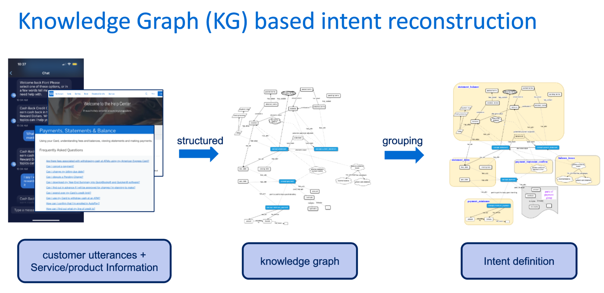
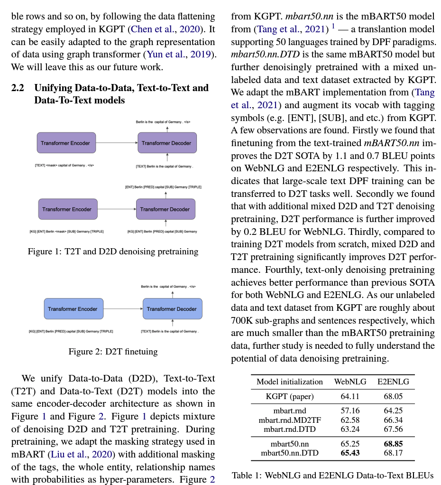

Projects
Knowledge graph based intents reconstruction
Built service knowledge graph (KG). Re-construction of label hierarchy and refining classification logistics. Labels are reselected and redefined by entity and sementic similarity. The knowledge graph based intents improve classification model accuracy from 82.48% to 92.17%. The knowledge graph is also used to ingest fine grain factual knowledge in contextual learning and helps to surpress hallucination in generation.
LLMs augmented Auto-labelling pipeline

[Description of the project...]
Knowledge graph to text modelling
[Description of the project...]